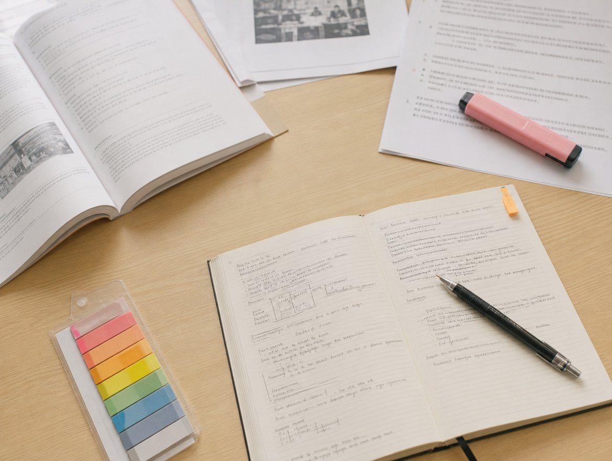

- 해람중 내신, 교과서와 프린트물에서 시작되는 촘촘한 분석
- 해람중에서 강릉교동점까지, 효율적인 동선 관리로 만드는 공부 시간
- 개별 맞춤 무학년 수업, 나만의 속도로 완성하는 실력의 깊이
- 시험 4주 전부터 역산하는 철저한 내신 대비 루틴
- 오답노트와 개념노트로 다지는 상위권 도약의 디딤돌
- 우리 아이에게 맞는지는 무료 상담으로 먼저 확인해보실 수 있어요.
강릉시 교동과 유천지구 인근은 강릉 교육의 중심지로서 학생들의 활기찬 이동이 매일같이 이어지는 곳입니다. 해람중학교에 재학 중인 학생들은 방과 후가 되면 학원가와 주거 밀집 지역 사이를 분주히 오가며 자신만의 학습 루틴을 다져가고 있습니다. 특히 해람중 주변은 교통이 편리하면서도 도서관과 각종 학습 인프라가 잘 갖춰져 있어, 스스로 공부하는 습관만 제대로 잡힌다면 내신 경쟁력을 높이기에 최적의 환경을 자랑합니다. 많은 학생이 율곡초나 경포초를 거쳐 해람중으로 진학하며, 지역 내 학교들과 교육적 유대감을 가지고 성장하는 과정을 겪게 됩니다.
중학교 시절의 성적은 단순히 수치상의 점수를 넘어, 고등학교 진학 이후의 학습 역량을 결정짓는 중요한 지표가 됩니다. 특히 해람중 내신을 준비할 때는 학교에서 배포하는 교과서와 유인물, 그리고 수업 시간에 선생님이 강조하시는 포인트들을 정확히 짚어내는 눈이 필요합니다. 단순히 학원을 많이 다니는 것보다, 자신의 학습 속도에 맞춰 부족한 부분을 채우고 모르는 것을 완벽히 이해하는 과정이 무엇보다 중요합니다. 강릉 지역의 교육 환경은 날로 치열해지고 있으며, 학부모님들은 아이가 시행착오를 줄이고 효율적으로 공부할 수 있는 방법을 찾는 데 집중하고 계십니다.
학습의 본질은 결국 '자기 주도성'입니다. 아무리 좋은 강의를 듣더라도 아이의 머릿속에 지식이 내재화되지 않는다면 무용지물입니다. 해람중 내신을 준비하는 과정에서 성적 향상을 경험한 학생들의 공통점은 자신의 실력을 객관적으로 파악하고, 취약점을 보완하는 데 시간을 아끼지 않았다는 점입니다. 오늘 이 글에서는 해람중학교 내신을 준비하는 학생과 학부모님을 위해, 지역 특성을 반영한 구체적인 전략과 학습의 효율을 극대화할 수 있는 방향성을 제시하고자 합니다. 우리 아이가 즐겁게 공부하고 성취감을 맛볼 수 있는 길을 함께 찾아보겠습니다.
해람중 내신, 교과서와 프린트물에서 시작되는 촘촘한 분석
중학교 내신 시험의 가장 큰 특징은 교과서 중심의 출제 원칙입니다. 해람중뿐만 아니라 대다수 중학교에서 시행되는 지필평가는 교과서의 핵심 개념을 얼마나 정확히 이해하고 있는지를 묻는 문항으로 구성됩니다. 따라서 내신 대비의 첫 단추는 교과서를 여러 번 정독하며 문장 하나하나에 담긴 의미를 파악하는 것입니다. 특히 주요 과목인 국어, 영어, 수학은 교과서의 예제와 단원 마무리 문제만 완벽히 이해해도 기초 점수를 확보하는 데 큰 무리가 없습니다. 교과서에 등장하는 도표나 사진 설명까지 꼼꼼히 챙기는 습관이 필요합니다.
학교 선생님들께서 수업 시간에 배포하시는 프린트물은 시험의 '예고편'과 같습니다. 선생님들이 수업 중 강조하시는 내용은 반드시 문제로 출제될 확률이 높기 때문에, 프린트물에 필기된 내용을 단권화하는 작업이 필수적입니다. 단순히 받아 적는 것에 그치지 말고, 왜 이 내용이 중요한지 스스로 질문을 던져보아야 합니다. 프린트물은 교과서의 내용을 보충하거나 심화하는 역할을 하므로, 시험 4주 전부터는 교과서와 프린트물을 연결 지어 복습하는 체계적인 계획을 세워야 합니다.
또한 부교재가 활용되는 경우, 부교재의 모든 문제를 최소 3회 이상 풀어보는 것을 권장합니다. 처음에는 눈으로 보고 풀었다면, 두 번째는 직접 손으로 써가며 풀고, 세 번째는 오답 위주로 다시 검토하는 방식입니다. 해람중 내신에서 고득점을 노리는 학생들은 이미 정해진 기본 문제집 외에도 학교 선생님들이 강조하신 자료를 최우선 순위에 둡니다. 이처럼 학교 수업과 직결된 자료들을 완벽하게 소화하는 것이야말로 내신 성적을 흔들림 없이 유지하는 가장 확실한 길입니다.
해람중에서 강릉교동점까지, 효율적인 동선 관리로 만드는 공부 시간
강릉교동점은 해람중학교를 포함한 인근 학교 학생들의 학습 밀착 관리를 위해 정원로 44 202호에 위치하고 있습니다. 학생들의 동선은 학습 효율과 직결됩니다. 학교가 끝난 후 바로 학습 공간으로 이동하여 뇌의 모드를 '공부 모드'로 전환하는 것은 매우 중요합니다. 너무 먼 거리의 학원을 오가느라 길에서 시간을 허비하기보다, 이동 시간을 최소화하고 그 에너지를 학습에 집중할 수 있는 환경을 선택해야 합니다. 강릉교동점은 이러한 접근성을 고려하여 학생들이 방과 후 곧바로 안정적으로 학습을 시작할 수 있도록 돕습니다.
지리적 이점은 단순히 물리적 거리에 국한되지 않습니다. 학교가 일찍 끝나는 날이나 시험 대비 기간에는 평소보다 더 많은 시간을 학습에 할애해야 하는데, 이때 가까운 곳에서 코치진의 피드백을 즉각적으로 받을 수 있다는 것은 엄청난 장점입니다. 집과 학교, 그리고 학습센터를 잇는 촘촘한 연결 고리를 통해 학생들은 자신의 하루 일과를 더욱 체계적으로 관리할 수 있습니다. 이는 학부모님들의 안심과도 연결되며, 학생 스스로가 자신의 공부 시간을 주도적으로 설계하는 연습의 장이 되기도 합니다.
방과 후 동선이 안정되면, 자연스럽게 학업에 대한 몰입도도 높아집니다. 학생들은 이곳에서 학교 과제를 우선적으로 해결하고, 남은 시간에 다음 시험을 대비하는 선행이나 심화 학습을 병행합니다. 이동 중 발생하는 스트레스를 줄이고, 학습 공간에서 코치와 함께 당일 학습 목표를 설정하는 시스템은 해람중 내신을 준비하는 학생들에게 최적화된 환경을 제공합니다. 쾌적한 학습 분위기 속에서 자신의 실력을 쌓아가는 과정이 강릉교동점에서는 매일같이 이루어지고 있습니다.
개별 맞춤 무학년 수업, 나만의 속도로 완성하는 실력의 깊이
많은 학생이 학년제 수업에서 겪는 어려움은 바로 '진도 맞추기'의 고통입니다. 하지만 실력은 학년이 같다고 해서 동일하게 상승하지 않습니다. 와와학습코칭센터의 개별 맞춤형 무학년 수업은 이러한 한계를 극복합니다. 학생이 중학교 1학년이라도 수학 실력이 부족하다면 초등 과정의 기초부터 다시 다질 수 있고, 반대로 실력이 뛰어나다면 상위 학년의 심화 과정을 앞서 나갈 수 있습니다. 이 방식은 해람중 내신을 준비할 때, 학생 개인의 강점과 약점을 정확히 파악하여 가장 효율적인 학습 루트를 설계해 줍니다.
무학년제 수업의 핵심은 '개인별 학습 수준의 존중'에 있습니다. 남들의 속도에 맞추느라 급하게 진도를 나가는 것이 아니라, 자신이 완벽하게 이해할 때까지 충분한 시간을 투입하는 방식입니다. 이는 특히 기초가 부족한 학생들에게는 자신감을 심어주고, 상위권 학생들에게는 지루함 없이 실력을 확장할 수 있는 기회를 제공합니다. 코치는 학생이 스스로 문제를 해결할 수 있도록 가이드를 제공할 뿐, 정답을 바로 알려주지 않습니다. 학생이 고민하고 해결하는 과정에서 진짜 실력이 길러지기 때문입니다.
또한, 학년의 벽을 허무는 수업은 공부에 대한 부담감을 덜어줍니다. '내가 이 학년인데 이 정도는 해야 해'라는 압박감 대신, '내가 어제보다 오늘 더 성장했다'는 성취감에 집중하게 됩니다. 해람중 학생들은 각자의 속도에 맞춰 가장 효과적인 학습을 수행하며, 이는 곧 내신 시험에서의 안정적인 성적으로 나타납니다. 무학년 수업을 통해 완성된 탄탄한 기본기는 고등학교 진학 이후에도 흔들리지 않는 학습 역량의 밑거름이 될 것입니다.
가까운 센터 상담으로 먼저 확인해보세요.무료 상담 신청하기 →
시험 4주 전부터 역산하는 철저한 내신 대비 루틴
해람중 내신 시험에서 좋은 결과를 얻기 위해서는 시험 4주 전부터의 전략적인 움직임이 중요합니다. 시험 기간이 임박해서 급하게 문제집만 푸는 방식은 단기적인 점수는 올릴지 몰라도, 장기적인 학습 능력을 기르는 데는 한계가 있습니다. 4주 전에는 먼저 학교의 시험 범위를 정확히 파악하고, 전체적인 학습량을 균형 있게 분배해야 합니다. 1주 차에는 개념 이해, 2주 차에는 유형별 문제 풀이, 3주 차에는 오답 및 심화 문제, 4주 차에는 실전 모의고사와 최종 점검이라는 명확한 로드맵이 필요합니다.
이 과정에서 가장 중요한 것은 '역산'입니다. 시험 당일 날짜를 기준으로 거꾸로 날짜를 세어 매일 해야 할 분량을 정하는 것입니다. 예를 들어 시험 직전 3일은 전체 범위를 훑어볼 수 있도록 계획을 짜야 합니다. 계획을 세우는 것에서 그치지 않고, 매일 자신의 공부 습관을 기록하는 플래너를 활용해야 합니다. 오늘 무엇을 배웠고, 어떤 부분이 부족했는지를 기록하는 과정은 스스로의 학습을 객관적으로 바라보게 합니다. 이러한 기록이 쌓이면 시험 직전, 자신만의 강력한 '비밀 무기'가 됩니다.
집에서 할 수 있는 가장 좋은 내신 대비법은 '백지 복습'입니다. 단원이 끝날 때마다 아무것도 적히지 않은 백지에 배운 내용을 구조화하여 적어보는 연습을 해보세요. 목차를 먼저 적고, 그 아래 핵심 키워드를 배치하다 보면 지식의 체계가 머릿속에 잡힙니다. 설명할 수 없는 것은 아는 것이 아닙니다. 부모님이나 친구에게 배운 내용을 직접 설명해보는 시간을 가지는 것도 좋습니다. 해람중 시험 문제는 서술형과 사고력을 묻는 문제가 포함되므로, 이처럼 논리적으로 표현하는 훈련이 실전에서 큰 힘을 발휘하게 됩니다.
오답노트와 개념노트로 다지는 상위권 도약의 디딤돌
상위권으로 올라가기 위해서는 '오답'을 관리하는 능력이 필수적입니다. 많은 학생이 틀린 문제를 다시 풀지 않거나, 단순히 해설지를 보고 '이해했다'고 착각합니다. 하지만 진짜 실력은 틀린 이유를 분석할 때 나옵니다. 단순 계산 실수인지, 개념의 오개념인지, 문제 해석의 오류인지 분류해야 합니다. 오답노트는 단순히 틀린 문제를 모아두는 곳이 아니라, 내 학습의 취약점을 기록하는 '성장 기록지'입니다. 틀린 문제를 다시 풀어보고, 며칠 뒤에 또 틀린다면 그 부분은 완벽히 이해할 때까지 반복해야 합니다.
개념노트 역시 중요합니다. 교과서의 내용을 나만의 언어로 요약 정리하는 개념노트는 시험 직전 벼락치기용으로 활용하기 좋습니다. 교과서의 딱딱한 문장을 내 말투로 바꾸고, 도표나 그림을 직접 그려보며 정리하는 과정 자체가 훌륭한 공부입니다. 개념노트를 만들 때는 목차를 중심으로 마인드맵을 그리듯 구조화하는 것이 좋습니다. 이렇게 정리된 노트는 고등 과정으로 올라가서도 기초 자료로 활용할 수 있는 소중한 자산이 됩니다.
해람중학교 내신 준비를 위해 가장 권장하는 방법은 '반복과 확인'입니다. 개념노트로 전체 흐름을 잡고, 유형 문제집으로 실력을 다진 뒤, 오답노트로 구멍을 메우는 3단계 프로세스를 생활화하세요. 이러한 학습법은 단기간에 완성되지 않습니다. 꾸준히 매일 조금씩 쌓아가는 과정이 필요합니다. 처음에는 오답노트를 작성하는 것이 번거롭고 힘들게 느껴질 수 있지만, 시험 성적이 오르고 자신이 문제를 풀어나가는 과정이 수월해지는 것을 느끼게 되면 스스로 찾아 하게 될 것입니다.
자주 묻는 질문
와와학습코칭센터의 무학년 수업이 내신 대비에 어떻게 도움이 되나요?
학년과 상관없이 학생의 현재 실력을 기준으로 부족한 부분을 보완하고, 강점을 극대화하는 맞춤형 커리큘럼을 제공합니다. 이를 통해 해람중 학교 진도에 맞추면서도 본인이 취약한 기초 개념을 빠르게 복구하여 내신 경쟁력을 근본적으로 높일 수 있습니다.
학원에서 내신 대비 기간에 어떤 관리가 이루어지나요?
시험 4주 전부터 학교별 교과서와 프린트물, 부교재를 바탕으로 역산 계획을 세우고 이를 매일 학습 플래너로 기록하며 관리합니다. 학교별 출제 경향을 반영한 맞춤형 문제 풀이와 오답 노트 작성을 통해 실수를 줄이고 서술형 대비까지 철저히 점검합니다.
강릉교동점 상담은 어떻게 신청하며, 비용은 어떻게 되나요?
강릉교동점은 김태훈 원장이 직접 운영하며 학생 개개인에게 최적화된 학습 코칭을 제공합니다. 2025 소비자가 뽑은 올해의 브랜드대상에 빛나는 와와학습코칭센터의 체계적인 관리를 경험하고 싶으시다면 언제든 '무료 학습상담 신청'을 통해 예약해주시기 바랍니다. 교습비는 학생의 학습 수준과 목표에 따라 개인별로 상이하므로, 방문 상담 시 상세히 안내해 드립니다.
📍 강릉교동점 한눈에 보기
| 지점 | 와와학습코칭센터 강릉교동점 |
|---|---|
| 주소 | 강원특별자치도 강릉시 정원로 44 202호 |
| 담당 학교 | 율곡초, 경포초, 유천초, 관동중, 율곡중, 해람중, 솔올중, 강일여고, 강릉여고, 명륜고, 강릉제일고 |
| 운영 과목·학년 | 국어 초3~고2 · 영어 초3~고1 · 수학 초3~고2 |
| 수업 시간 | 평일 오후 3시 이후 / 주말: 주말불가 |
| 등록 | 강릉교육지원청 등록 제1386호 · 김태훈 원장 |
운영 과목·시간은 센터 사정에 따라 바뀔 수 있어 상담 시 확인해 드립니다. 센터 찾기에서 보기 · 이 센터 상담 신청